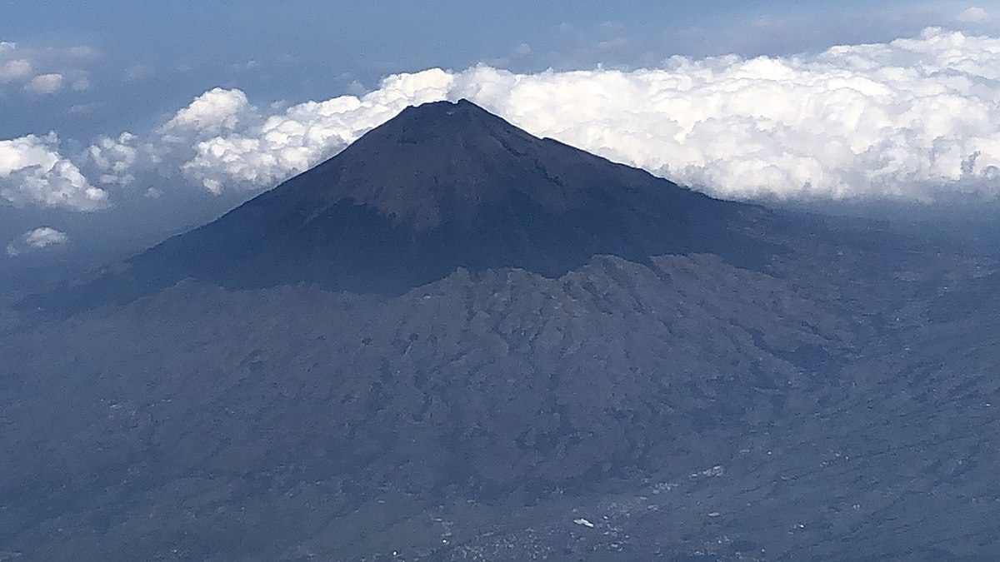
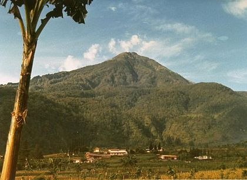
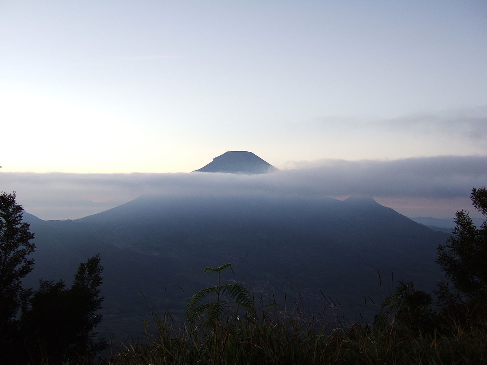
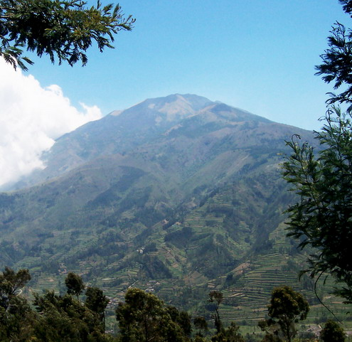

Gunung Slamet
Predikat atap Jawa Tengah disandang oleh Gunung Slamet yang memiliki ketinggian 3.428 Mdpl. Gunung ini berada di 5 kabupaten, yakni Purbalingga, Banyumas, Pemalang, Tegal, dan Brebes.
baca selengkapnya >>>

Gunung Sumbing
Memiliki ketinggian 3.371 Mdpl, Puncak Gunung Sumbing menjadi titik tertinggi kedua di Provinsi Jawa Tengah. Gunung ini berada di 3 Kabupaten, yakni Temanggung, Wonosobo, dan Magelang.
baca selengkapnya >>>

Gunung Lawu
Gunung Lawu menjadi titik tertinggi ketiga di Provinsi Jawa Tengah dengan ketinggian 3.265 Mdpl. Namu puncak tertinggi gunung ini, Hargo Dumilah tidak hanya menjadi milik Jawa Tengah saja.
baca selengkapnya >>>

Gunung Sindoro
Gunung yang kerap dianggap sebagai saudara kembar Gunung Sumbing ini menjadi titik tertinggi ke-4 di Jawa Tengah. Puncak Gunung Sindoro ada pada ketinggian 3.153 Mdpl.
baca selengkapnya >>>

Gunung Merbabu
Puncak tertinggi ke-5 di Jawa Tengah adalah Gunung Merbabu. Titik tertinggi gunung ini adalah Puncak Trianggulasi dengan ketinggian 3.142 Mdpl.
baca selengkapnya >>>